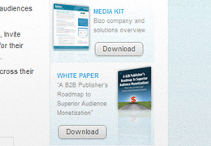

<div class="row-fluid">
  <div class="span9">
  <!--Limited content area to span9 for readability - shorter paragraph width-->
    
    <h1 class="section-header">Audience Management</h1>
    
    <div class="row-fluid">
      <div class="span3">
        <a href="#" class="thumbnail"></a>
      </div>
      <div class="span9">
        <h3>Actions</h3>
        <p>Action tracking gives you clear visibility into the Bizographic profiles of visitors who perform
        key actions on your website such as "Whitepaper Downloads" or "Event Registrations."</p>
        <p>Action metrics are displayed in your <a href="section_page_audience_analysis.html">Audience Analytics</a> reports. Once you 
        understand the profiles of your converting audience you can leverage Bizo marketing campaigns to bring more of your target 
        audience to your websites.</p>
    
        <div class="contentbox">
          <div class="contentbox-header">
            <h4>Campaign optimization with Actions</h4>
          </div>
          <div class="contentbox-body">
            <ol>
              <li>Create an action that represents a successful transaction you want to drive on your website by giving it a 
              name and specifying a <abbr class="initialism">URL</abbr> that marks the completion of the action.</li>
              <li>Launch a <a href="section_page_retargeting.html">Retargeting</a> campaign associated with the action to draw in your 
              audience and measure how your campaign drives conversions.</li>
              <li>Associate the action with <a href="section_page_social_markteting.html">SmartLinks</a> to track conversions 
              from your social audience.</li>
              <li>Analyze your action's metrics to track performance.</li>
              <ul>
                <li>View your action's total conversions on the <a href="#">Trends</a> report.</li>
                <li>See how your Retargeting campaign is driving actions in the <a href="#">Campaigns Report</a>.</li>
                <li>Find out how many conversions are coming from your social audience on the <a href="#">SmartLinks</a> report.</li>
              </ul>
            </ol>
          </div>
        </div>
        <p>
          <a href="#" class="btn btn-primary">Create an Action</a>
        </p>
      </div>
    </div>
    <hr />
    
    
    
    <div class="row-fluid">
      <div class="span3">
        <a href="#" class="thumbnail"></a>
      </div>
      <div class="span9">
        <h3>Custom Segments</h3>
        <p>Custom segments allow you to identify visitors who view specific areas of your website. Once the segment is defined, the <a href="#">Audience
        Insight</a> and <a href="#">Audience Trends</a> reports can be filtered by a custom segment to display the bizographic profiles of visitors to 
        this area of your website.</p>
    
        <div class="contentbox">
          <div class="contentbox-header">
            <h4>Personalized Retargeting with Custom Segments</h4>
          </div>
          <div class="contentbox-body">
            <ol>
              <li>Create a custom segment for a distinct part of your website (a section about a particular product, for example).</li>
              <li>The <a href="tag_your_sites.html">Bizo Insight tags</a> on your segment pages will track visitors to that segment.</li>
              <li>Launch a <a href="section_page_retargeting.html">Retargeting</a> display campaign to draw those visitors back to your 
              website and re-engage them.</li>
            </ol>
          </div>
        </div>
        <p>
          <a href="#" class="btn btn-primary">Create a Custom Segment</a>    
        </p>
      </div>
    </div>
    
  </div>  
</div>
